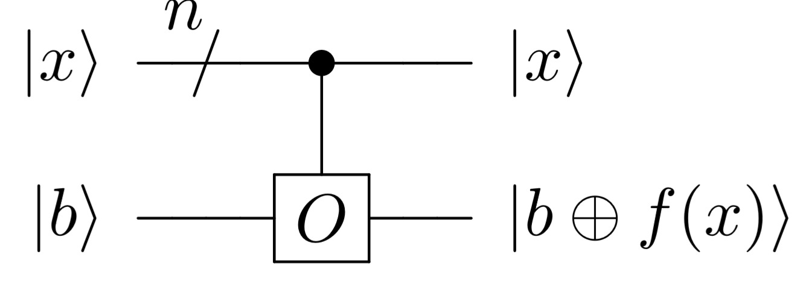

Algoritmos Introdutórios#
Nota
Material extraído do TCC Computação Quântica: Uma abordagem para estudantes de graduação em Ciências Exatas, de Giovani Goraiebe Pollachini.
Neste capítulo serão abordados os algoritmos introdutórios, algoritmos que possuem problemas que a única aplicação é servir como material de estudos em computação quântica, para entender as bases de algorítmos mais complexos que possuem aplicações reais, como os algorítmos de busca.
Oráculos quânticos#
Oráculos quânticos são peças fundamentais em vários algoritmos, especialmente os introdutórios e os de busca. Eles representam uma função clássica desconhecida, tratada como uma caixa-preta, que podemos consultar dentro de um circuito quântico.
A ideia central é: como transformar uma função clássica
em uma operação unitária.
Existem duas formas padrão de se fazer isso:
Oráculo XOR (também encontrado como oráculo padrão)
Oráculo de fase
Ambos implementam a mesma função \(f\), mas em representações diferentes, e alguns algoritmos preferem uma forma específica para permitir interferência quântica.
Como construir um oráculo quântico#
1. O Oráculo XOR (padrão)#
O primeiro passo é construir uma versão unitária da função booleana. A operação desejada é:
onde:
\(x\) são os qubits de entrada,
\(y\) é um qubit auxiliar \(target (ou alvo)\),
\(\oplus\) é XOR.
Como montar o oráculo de XOR#
Para construir \(U_f\), basta representar logicamente a função \(f(x)\) como uma sequência de portas quânticas reversíveis.
Em geral:
Escreva a função booleana (f(x)) como portas clássicas (AND, XOR, NOT).
Troque essas portas por versões reversíveis:
AND → Toffoli
XOR → CNOT
NOT → X
Reserve um qubit auxiliar \(y\) para receber o XOR com o resultado.
Construa um circuito que compute \(f(x)\) num registrador auxiliar, e depois aplique uma CNOT para escrever o valor em \(y\).
É exatamente isso que o oráculo XOR representa.

Ele é o mais direto, mas não é o mais conveniente para algoritmos baseados em interferência.
2. Oráculo de fase#
Algoritmos como Deutsch–Jozsa, Simon, Grover e QFT-based usam um oráculo na forma:
Em vez de armazenar o resultado de \(f(x)\) em um bit auxiliar, o oráculo apenas adiciona uma fase de \(-1\) quando \(f(x) = 1\). Isso é ideal para interferência quântica, porque fases negativas mudam probabilidades após a transformada de Hadamard.
Construindo o oráculo de fase a partir do oráculo XOR#
Existe um truque fundamental:
Se você alimentar o oráculo XOR com (|-\rangle) no qubit alvo, então:
e ocorre o seguinte:
Se \(f(x)=0\): nada muda.
Se \(f(x)=1\): o XOR troca \(\ket{0}\) ↔ \(\ket{1}\), o que introduz um sinal negativo.
Isso resulta exatamente em:
Ou seja, o oráculo XOR “induz” um oráculo de fase se a entrada target for \ket{-}.
Essa é a construção padrão.
Resumo prático: como montar um oráculo quântico#
Passo 1 — Comece pela função booleana (f(x))#
Divida-a em ANDs, XORs, NOTs.
Passo 2 — Torne a função reversível#
AND → Toffoli
XOR → CNOT
NOT → X
Use qubits auxiliares se necessário.
Passo 3 — Escolha o tipo de oráculo que o algoritmo pede#
Se precisar do oráculo XOR:#
Implemente:
Se precisar do oráculo de fase:#
Construa o oráculo XOR normalmente.
Coloque \(\ket{-}\) no qubit alvo.
A fase aparece automaticamente:
\[ \ket{x} \mapsto (-1)^{f(x)} \ket{x} \]
Passo 4 — Opcional: remova qubits auxiliares#
Se o oráculo precisar ser “limpo”, desfaça os cálculos revertendo operações \(computar → aplicar fase → uncompute\).
Conteúdo#
Nesse capítulo serão abordados os seguintes algoritmos: